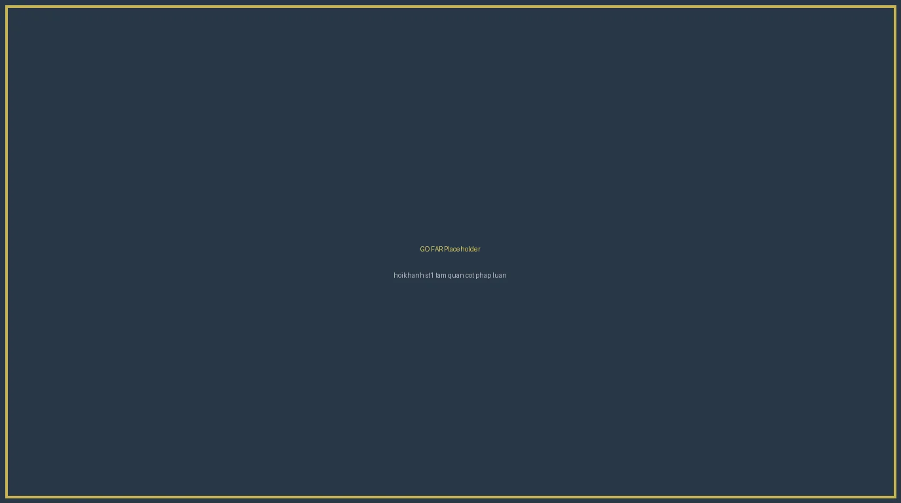

🧭 1. Tổng Quan Chùa Hội Khánh & Hành Trình Hơn 283 Năm Lịch Sử
Theo sử liệu Phật giáo và bia ký tại chùa, Chùa Hội Khánh được Thiền sư Đại Ngạn — dòng Thiền Lâm Tế — khai sơn vào năm Tân Dậu 1741, triều vua Lê Hiển Tông. Đây là một trong những ngôi chùa lâu đời nhất vùng Đông Nam Bộ. Năm 1861, trong làn sóng bình định của thực dân Pháp, chùa bị thiêu hủy hoàn toàn. Đến năm 1868, chùa được xây dựng lại tại vị trí hiện nay với quy mô bề thế và kiến trúc "trùng thiềm trùng lương" tiêu biểu của Nam Bộ, với hàng chục cột gỗ quý, hệ thống tượng Thập điện Minh Vương và La Hán gỗ mít sơn son thếp vàng thế kỷ XIX còn được bảo tồn nguyên vẹn đến ngày nay.
Chùa Hội Khánh còn gắn liền với lịch sử dân tộc: vào khoảng năm 1920, cụ Nguyễn Sinh Sắc — Phó bảng, thân sinh của Chủ tịch Hồ Chí Minh — đã về sinh sống tại Thủ Dầu Một, lui tới chùa Hội Khánh để hội họp và lập Hội Nam Kỳ Yêu Tế Đạo, hoạt động yêu nước trong lòng địch. Linh vị và nhà Tổ thờ cụ Nguyễn Sinh Sắc đến nay vẫn được nhà chùa trân trọng gìn giữ. Năm 2013, chùa khánh thành tượng Đức Bổn Sư Thích Ca Nhập Niết Bàn dài 52m, cao 12m trên mái chùa, được VietKings và Tổ chức Kỷ lục Châu Á công nhận là "Tượng Phật nằm trên mái chùa dài nhất Châu Á".
📜 2. Nghi Thức Hành Lễ & Giữ Gìn Di Sản Cổ Tự Lâm Tế
Chùa Hội Khánh lưu giữ nhiều hiện vật cổ quý giá gần 300 năm. Khi về chiêm bái, hành giả cần lưu ý các quy chuẩn sau để bảo tồn di sản và giữ không gian thiêng liêng trang nghiêm:
🏮 3 Quy Chuẩn Văn Minh Tại Cổ Tự Hội Khánh
🕯️ Bảo Vệ Kiến Trúc Gỗ Quý & Tranh Sơn Mài Cổ
Toàn bộ chánh điện, hệ thống tượng La Hán và 12 bức tranh sơn mài cổ 1823 đều là cổ vật vô giá: chỉ thắp hương tại lư hương quy định ngoài sân, tuyệt đối không chạm tay vào tượng gỗ và tranh cổ trong nội điện.
🏺 Trang Phục Lịch Sự & Lễ Phẩm Thuần Chay
Mặc trang phục kín đáo qua đầu gối (áo lam, áo dài, sơ mi trang nhã), dâng hoa tươi và quả ngọt; không đốt vàng mã trong khuôn viên chùa và không để tiền lẻ lên tay tượng.
🏛️ Kính Trọng Nơi Thờ Cụ Nguyễn Sinh Sắc
Nhà Tổ nơi lưu giữ linh vị cụ Nguyễn Sinh Sắc là di tích có giá trị lịch sử đặc biệt: giữ yên lặng, không chụp ảnh tùy tiện, vào tham quan với tâm thái tôn kính và biết ơn.
⛩️ 3. Lộ Trình 6 Trạm Chùa Hội Khánh — Dấu Tích 283 Năm Trên Đồi Phú Cường
Lộ trình 6 trạm đưa hành giả qua Cổng Tam Quan cổ kính, chiêm bái Chánh Điện trùng thiềm trùng lương hơn 150 năm, ngắm 12 bức tranh sơn mài cổ 1823, kính lễ tại Nhà Tổ Nguyễn Sinh Sắc, đứng trước tượng Phật Niết Bàn dài nhất Châu Á và ngắm toàn cảnh Thủ Dầu Một từ vườn linh thụ trên đồi chùa.
Hành Trình Chiêm Bái Chùa Hội Khánh — Đất Thiêng 283 Năm Thủ Dầu Một
Theo dấu Thiền sư Đại Ngạn khai sơn 1741, chiêm bái tượng Phật Niết Bàn kỷ lục Châu Á 52m và trì tụng văn khấn cầu phúc lành tại ngôi cổ tự lịch sử gắn liền với thân sinh Chủ tịch Hồ Chí Minh.

Từ con phố Bác Sĩ Yersin trung tâm Thủ Dầu Một, bước lên dốc đồi Phú Cường, Cổng Tam Quan Chùa Hội Khánh hiện ra uy nghi với mái ngói âm dương đỏ thắm rêu phong và cột Pháp Luân sừng sững biểu trưng cho bánh xe chánh pháp — dấu tích thiêng liêng của hơn 283 năm Phật pháp trên đất Bình Dương.
🏯 Lịch Sử Khai Sơn & Phục Dựng Cổ Tự
- Thiền sư Đại Ngạn — dòng Lâm Tế đời thứ 36 — khai sơn chùa năm Tân Dậu 1741 trên đồi đất đỏ Phú Cường khi vùng đất Thủ Dầu Một vừa được khai phá.
- Năm 1861, chùa bị giặc Pháp thiêu hủy hoàn toàn trong đợt càn quét; năm 1868 được tái thiết tại vị trí hiện nay với quy mô lớn hơn, kiến trúc bề thế hơn.
- Cổng Tam Quan với 3 lối đi tượng trưng cho Không Quan (giải thoát), Vô Tướng Quan và Vô Tác Quan — ba cánh cửa tâm pháp Lâm Tế.
👑 Hệ Phái Lâm Tế & Kiến Trúc Nam Bộ Cổ
- Chùa thuộc hệ phái Lâm Tế — một trong những dòng thiền chính của Phật giáo Bắc tông, nổi bật với pháp môn công án thiền sắc bén.
- Phong cách kiến trúc "trùng thiềm trùng lương" (mái chồng mái, xà đè xà) là đặc trưng của chùa cổ Nam Bộ thế kỷ XVIII–XIX.
- Giữ trật tự, bỏ giày dép đúng nơi quy định trước khi lên thềm điện.
CHỨNG NHẬN CHIÊM BÁI CHÙA HỘI KHÁNH VIÊN MÃN
Chúc mừng bạn đã hoàn thành trọn vẹn lộ trình chiêm bái 6 trạm tại Di tích lịch sử-văn hóa Quốc gia Chùa Hội Khánh — Đất Thiêng 283 Năm Thủ Dầu Một. Nguyện cầu hồng ân Tam Bảo cùng Đức Bổn Sư Thích Ca Mâu Ni và Chư Tổ Lâm Tế gia hộ gia quyến bình an, phúc lộc viên mãn.
🧭 4. Lịch Trình 1 Ngày Chùa Hội Khánh — Thủ Dầu Một & Làng Nghề Sơn Mài Bình Dương
Hành trình 1 ngày khám phá chiều sâu tâm linh và di sản văn hóa tỉnh Bình Dương (cách trung tâm TP. Hồ Chí Minh khoảng 30km về phía Bắc):
Buổi Sáng (07h00 – 11h00): Chiêm Bái Cổ Tự 283 Năm & Tượng Phật Niết Bàn Kỷ Lục
- 07h00: Đón bình minh vàng trên đồi Phú Cường, bước qua Cổng Tam Quan cổ kính và chiêm ngưỡng cột Pháp Luân uy nghiêm.
- 08h00: Lễ Phật tại Chánh Điện trùng thiềm trùng lương, chiêm ngưỡng bộ tượng La Hán gỗ mít sơn son thếp vàng thế kỷ XIX và 12 bức tranh sơn mài cổ 1823.
- 09h30: Kính lễ tại Nhà Tổ Nguyễn Sinh Sắc rồi ra ngắm tượng Phật Niết Bàn 52m kỷ lục Châu Á trên mái chùa.
Buổi Trưa (11h15 – 13h30): Cơm Chay Thanh Đạm & Nghỉ Trưa Vườn Linh Thụ
Dùng bữa trưa chay thanh khiết với các thức rau đậu Nam Bộ tươi ngon, canh chua chay và chè đậu xanh ngọt lành dưới bóng mát vườn linh thụ trên đồi chùa.
Buổi Chiều (14h00 – 17h30): Làng Nghề Sơn Mài Tương Bình Hiệp & Phố Cổ Thủ Dầu Một
- 14h00: Ghé thăm làng nghề sơn mài Tương Bình Hiệp — làng nghề truyền thống hơn 300 năm tuổi, nơi ra đời những tác phẩm sơn mài độc bản nức tiếng Đông Nam Á.
- 15h45: Dạo bộ phố cổ Thủ Dầu Một, ghé thăm Nhà cổ ông Trần Công Vàng, chợ Thủ Dầu Một xưa và thưởng thức đặc sản bánh bèo chén, hủ tiếu bò kho.